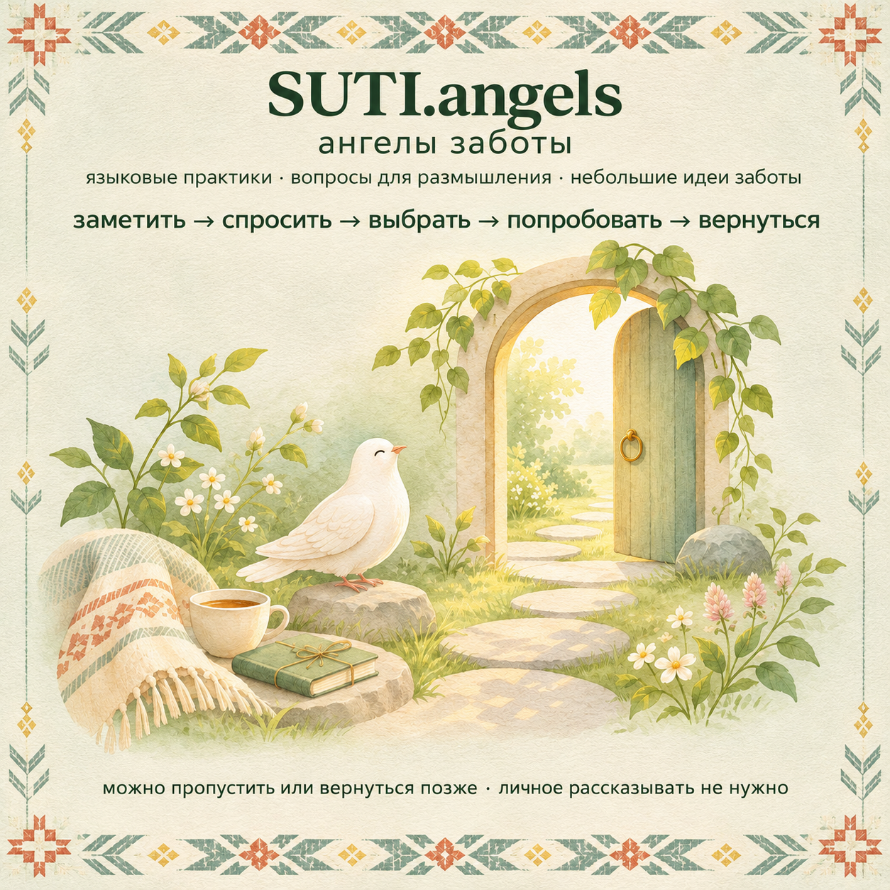

открытый материал 01 · SUTI.angels
добро пожаловать в SUTI.angels 🕊️
здесь появляются короткие языковые практики, вопросы для размышления и небольшие идеи заботы о себе, людях рядом и общем пространстве 🌱
можно прочитать, попробовать, пропустить или вернуться позже. отвечать и рассказывать личное не нужно.
анкета открывается в Google Forms. если отправить ответ, его получит организатор формы. участие добровольное.

начало цикла
заметить · спросить · выбрать · попробовать · вернуться
- заметить
- спросить
- выбрать
- попробовать
- вернуться
это приглашение к небольшому выбранному шагу. можно остановиться, не отвечать и не объяснять отказ.
что здесь значит «ангел заботы»
«ангел заботы» здесь - образ внимательного помощника-навигатора. сейчас канал публикует редакционные материалы: публичный бот и дежурная команда не запущены, а посты не означают, что кто-то наблюдает за ответами или автоматически организует помощь.
не присылайте сюда адреса, документы, сведения о здоровье, пароли и чужие личные истории.
канал и анкета не заменяют медицинскую, психологическую, юридическую или экстренную помощь. при непосредственной опасности обратитесь в местную экстренную службу или к человеку рядом, которому доверяете.